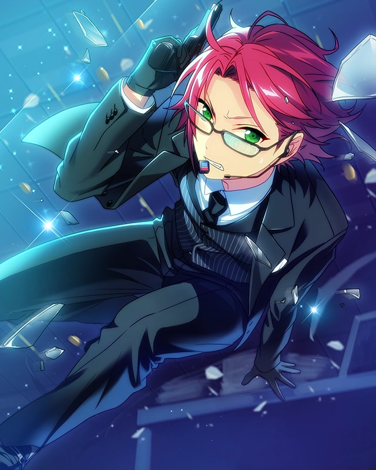
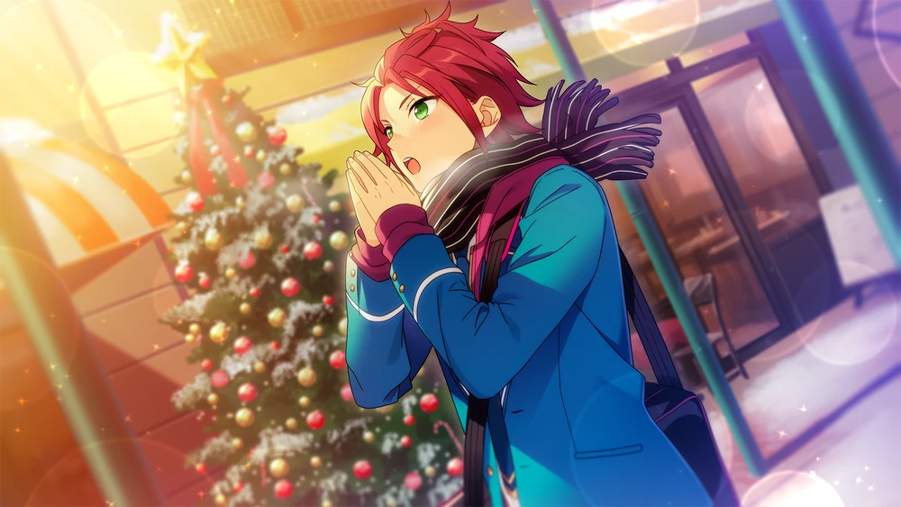
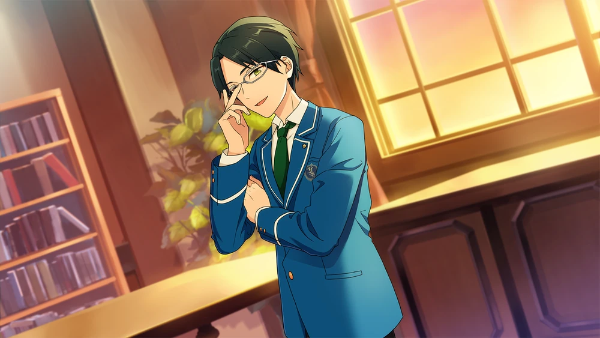

Agents



Unproofread Translations Terms of Service: This story is not JP proofread. Unproofread translations are under much stricter terms of service, including no screenshots publicly spread. Click for more information
While these translations are as accurate as I can personally make them, I am not comfortable with and do not permit use of the following:
Do not take or publicly circulate screenshots of this translation.
Do not use this translation in analysis threads, story threads, fanworks, quotebots, etc.
I would love to get this story properly proofread one day! If you are a translator interested in JP proofreading this story, feel free to email me or DM me at @citrinesea on Twitter.
Chapter 1

Hello, Anzu-chan.
Welcome to the Student Council room, come make yourself at home. Care for a cup of tea? It's even colder this time of year, right, so it's to keep your body warm...♪
What's the matter? Please, there's nothing to be afraid of, you know. That hurts my feelings, fufufu...
Well, I suppose I am pushing unreasonable demands of you. Of course you can't help but be wary.
Yes, anyways, please take a seat. I don't intend to take up too much of your time, so you can make yourself comfortable.
(Cough, cough). I just get in terrible shape during the winter, don't I...?
This time last year I was in the hospital, so I've holed up in the Student Council room where it's heated just to be safe.
The other student council members are bustling all over the place with work. It's lonely having no one to talk to.
I'm truly grateful you came when I called for you.
Anyways. I didn't call you for the sake of idle pratter, though I don't mind if we have tea. I have a favor to ask of you if you would hear me out?
Ahh, please don't tense up. This isn't me asking as the Student Council president, this is me asking as a normal person.
Isn't listening to those sorts of things your duty, Producer-chan?
In return for me giving you such a delicious blend of tea, allow me to give you a little task to do for me ♪
Anzu-chan. I am going to give you a secret mission.
Please keep all things regarding this secret mission confidential from everyone else. The other student council members... and especially Keito cannot know.
Up to speed so far?
You seem to be making suspicious moves yourself...
We can eye each other down and try to ascertain each other's intentions, but I want my goal to be accomplished. This is something I can only ask of you.
Shall I put it in another way? Anzu-chan, I want you to be my secret agent.
I may be the student council president, but I was hospitalized for quite a long time...
The person who truly holds the power around here is Keito. Most of the members of the student council answer to him.
He's the one who takes care of all the practical matters of the student council, after all. That power is the fruit of all of Keito's hard work and dedication.
I have been absent that entire time, so I can't just take that away from him now. Still...
Be that as it may, that power is an obstacle for me this time. The student council holds complete dominion over the halls of Yumenosaki Academy
The walls have ears and the doors have eyes, if you will.
I would like for you to carry out your secret mission by slipping past those eyes and ears.
Haven't you colluded with Trickstar and chipped away the steel authority of the Student Council before?
That is what I mean when I say you are the only one who can do this. I expect you can do that, so I requested it of you specifically.
I don't say that as some sort of dig, you know?
I hold you in high regard. That is why I'm bowing my head and asking for your help like this. I truly am in trouble, so please, if you do choose to accept this mission, lend me a hand.1
Of course, the end of the year is packed with DreFes like StarFes and SS. I'm sure you have plates of your own to juggle, as a producer, so...
Just keep my "secret mission" in the back of your mind...
If you have the time to spare, I'd appreciate if you could handle it. I'll be operating on my own, so you're just a precaution just in case.
I have high hopes for you, Anzu-chan. Why don't we do the best we can to have a wonderful Christmas Eve together. ... Now, would you care for a second helping of tea?
Chapter 2

... And that is the extent of my mission. Do you have any questions, Isara?
Mn~ ... No, nothing comes to mind in particular, but... I get how you feel, y'know~? Childhood friends making us worry about them and all...
Hmph. Your childhood friend is Sakuma's little brother, right? Take this as advice from an experienced veteran: getting involved with those vampires is bad news.
It seems you were born under the same unlucky stars as me, huh, Isara?
Well, it does get boring if nothing exciting ever happens. I've been thinking it's been fun in its own way lately.
... I guess that's that. Should I go get the ball rolling?
Yes, I'm leaving it to you. Just do things "your way," there's no rush to get it done. I have full faith in your capabilities, Isara.
Getting so much expectations put on me is a problem in and of itself~ We're talking about the student council president after all.
I doubt it'll be easy to go about things normally. Can't you carry things out yourself, Vice President?
I'll be making my own moves, but I don't have enough hands to help. All of the members of the student council are focused entirely on preparations for the year's end StarFes and SS.
And there are countless other DreamFeses on top of those.
The B1s Eichi seems to amuse himself with... Those informal matches are encouraged too. There have been rumors of S3's and such being approved as official matches too.
The frequency of DreamFeses has absolutely exploded. It's impossible for the student council to supervise and manage each and every one of them.
From next year onward, the Production Course will be properly instated... So I imagine the load of the student council will decrease then, but...
Right now, I can't use the valuable manpower of the student council for a matter as personal as this.
Huh~ So I'm not considered "valuable manpower"? Exploited as always, huh.
Don't say that, Isara. If you have the free time from your usual work, I know you'll be able to accomplish this.
... I think you'll be the next student council president, you know.
Mn~ I'm happy you think so highly of me, but... if you give me too much responsibility, I won't be able to have as much freedom, which would suck.
Well, no, it's a nice change of pace. You can count on me, Vice President. If it's a mission from you, I'll the job done... This time too ♪
Thanks, you're really helping me out. For now, I have Archery Club duties to attend to.
You're the only one I can rely on, Isara. I'll be sure to thank you. I'm sorry to have to give you work at such an important time right before "SS" begins.
No, no. Stuff like this helps keep my mind off things, somwhow. People have been real considerate of me lately, and haven't been asking for things. It actually gets kinda lonely.
I wanna be a little more busy...♪
That sounds like you've already got a disease. Well, whatever, I'm relying on you.
Just to be clear, Eichi absolutely cannot know about this.
That guy's been a real... It looks like he's been calling that Anzu over often. Watch out for her too.
Watch out for Anzu? She's a hard read with her pokerface, but I feel like she's the type who can't really keep a secret. Well, I understand, I'll keep an eye out.
Anything else you want me to do? I can get that done after~♪
You're a real go-getter, huh...? Well, Himemiya seemed worried about something, so if you have the time, could you check in with him?
Well, people are very susceptible to getting sick this time of year, so try not to push yourself too much.
Yeah, yeah. You're prone to pushing yourself too, so I was honestly glad you gave me the job. ... Anyways, I'm off right awa~y ♪
Mhm. If anything happens, report back, I always have my cellphone on. Then again, if it's you handling it, I'm sure I can rest easy...♪
Chapter 3

Mhm, mhm. Just do what you think is best~
I'll leave the rest to you, so make sure to let me know if something comes up.
I said it's fiiine, the vice president’ll think highly of you if you get the job done right. I'm not really sure about the president, though.
I'll support you as I can. But, hey, don't go putting more work on my plate, 'kay?
What was that~? You think I'd be happier if I had more work? You little...~ Well, you might be right, though.
But don't mess up on purpose because it'd make me happy, I'd get real mad then, hear me?
Yeah, well, whatever, as long as you're joking, it should be fine then. Thanks a bunch~ I'm just about to head to the school store. Bye bye~ Good job out there ♪
(Mhm. Aaalrighty, that's today's job assignments out of the way. With the way things are going, it'll get done one way or another.)
(The student council juniors are becoming reasonably useful too.)
(It'd be faster if I just did everything myself, but if I've got the manpower lying around, I might as well use it.)
(I have to think about next year and properly delegate and train the juniors with work.)
(The era of the absolute monarchy is over. We have to shift towards a more collective effort model.)
(Huh? I just got a text. Let's see... "I'm worried about my future," huh?)
(Huhhh...? Shouldn't you be going to your parents or your teachers for something like that?)
(It puts me in a real weird spot if you people rely on me for all kinds of things, you know...?)
(Well, the president and the vice president do seem a little unapproachable so...)
(I'm probably easier to approach with problems and requests because I seem more easygoing.)
(Hmnn~ Serious topics like a person’s future shouldn't be had over the phone. I'll just say, "Sure, I'll give you some advice. Let’s meet up tomorrow and talk about it properly.")
(Alrighty, sent. Nooow then, what should I do?)
(I've still got some time, but not enough to really do anything with it...)
(Well, it happens. I'll just go buy some of my favorite manga from the school store, it's been a long time since I've had the chance to unwind.)

(Mn...~ Looks like they don't have any in stock.)
(When it comes to the selection in here, there's a pretty big lean on idol development, huh~, and they’re kinda obscure titles. Guess I'll just go to the bookstore on my way home…?)

...
Hm? Ah, Himemiya! Oi~ssu, it's weird to meet you in a place like this, huh?
Ah, Monkey…2 Wait, I mean Isara-senpai. Hmph, it's not like I wanted to come to some shabby old shop like this, you know?
It's just, there's something I wanted, but I don't really know how things go in a store like this. I'm lost, can you help me~...?
Mmn~ I guess it's fine. What happened to Yuzuru? Isn't he always glued to you?
It looks like Yuzuru's busy helping out with stuff like student council work. He always buys the best things for me...
I don't really know what to pick out for him.
I see. What about your own work, are you in a place where you can slack off here? You were supposed to be the student council member in the first place, not Yuzuru. Right?
Don't make fun of me, I did my work nice and tidy, perfectly. And don’t lump me in with the other first years either, I'm fine’s Himemiya Tori, hear me!
I see. Well, if things are getting done, that's good.
You must actually be having issues if you’re the one asking for help, so I'll help you out. What did you wanna buy, Himemiya?
Right. Uhhh, well… Don't laugh, okay? ... I wanna buy Christmas presents.
Obviously, I'm gonna get the president some kind of national treasure stuffed to the brim with my love, but I have to wonder if I should get commoners something so extravagant~
I just wanna buy more... ordinary things... something boys my age would love.
I was raised surrounded by nothing but the best, so I don't really get what counts as “ordinary”.
I just wanna get presents for my classmates… the seniors in my club… my unit seniors…
This is my first time buying gifts for people, so I’m a little worried. What should I do, Monkey?
So when the going gets tough, you give up on not calling me "Monkey", huh…? Well, I don’t mind though.
I guess I’d be creeped out if you acted all demure and called me "senpai," so…
Anyways, I wasn't going to laugh or anything. Presents make everyone happy, whether you’re giving them or getting them~♪
Hmph, that feels a little condescending! Don't get the wrong idea, I'm the number one me after all.
It's just the duty of the nobility to reward all the people around you every now and then, is all...?
Yeah, yeah. Aren't you just the kindest, Himemiya? If that's the case, I got lots of insight I can give.
But they really only sell basic necessities here in the school store?
If it's presents you're after, you'd be better off going to all the different stores in town.
Lemme show you around. There's things I wanna go get too. And then we can go home after~♪
Alrighty, I'll leave it to you, then~ Just wait a sec, I have to text Yuzuru... "I'm going home with Monkey today".
And make sure you put a "Good luck with work," in there too. He gets put to work quite a lot for someone who isn't even a student council member.
... But I wonder what kind of work Yuzuru’s got on his plate?
Hm? Isn’t there student council work like, "preparing stuff for StarFes," or something?
Nah, that should be just about finished. I wouldn’t be able to loaf around like this if it weren’t…
School’s going to be out for winter vacation soon, so we’re trying to get the last of our work done before then.
And Yuzuru doesn’t involve himself in things that don't concern him. Mnm~ Maybe the President sent him out on a personal errand.
Chapter 4

Oooh...☆
Yep, sure enough, isn’t there just something dazzling about this time of year? All of the Christmas lights are just so vibrant! — Look, Himemiya! There's a humungous Christmas tree too!

H—Hold on a second, Monkey. Don't get too far ahead from me! You should be more considerate of me and cute little strides!
All the crowding is making me a little nauseous~?
That's because you're always being guarded by the Great Wall of Yuzuru~ ... Guess you're not used to crowds, huh. Are you doing alright? We can hold hands if you want?
Mnm, I'm not a kid. … You’re in real good spirits, huh~?
It's almost Christmas, of course I’m in good spirits. I bought the manga I wanted too~ Heheh.
Okay, now we'll go get your presents, so just leave it to me ♪
Obviously. How cheeky for you to make your own shopping a priority!
Well, the bookstore was fun, I guess. I never really read manga, so I completely lost track of time ♪
But if I take the comics I bought back home with me, Yuzuru will probably take them away, so...
I'm trusting them with you, Monkey. Bring them to the academy whenever I wanna read them, ‘kay?
Okey-dokey. You're not allowed to read manga, huh? I guess being from a rich family means they really are going to be super strict about it.
It's moreso Yuzuru than my family, though. He goes through all the books at home to censor them. Then, he blacks out all the parts he thinks could be a negative influence on my development.
Stuff like a teeny bit of blood, or revealing clothes...
He blacks out all kinds of stuff like that, so usually, I don’t even know what’s happening in the story when I read it. Today was the first time I was able to read it properly~♪
Way too overprotective, that guy~
I wouldn't say the mere act of keeping dirty things away from you is showing love. You're a healthy boy, y'know, you're bound to get interested in erotic stuff too, right!
...
Hm, what's the matter? Sorry, that probably felt like sexual harassment just now!
No, that’s not it, it's just... Doesn't that person walking over there look like Anzu?

Anzu? Oh, it really is her! He~ey, Anzu!
Anzu~☆
Ahaha. Don't pounce on her. You really do love her, huh, Himemiya...? You’ll get hit by a car if you fall out onto the road, you know~?
Anzu. Are you on your way home right now? You're still in your uniform...
Hmm. Yuzuru sent you out with a shopping list? You've got all kinds of things on your plate too, so don’t push yourself too hard…
Yeah, we're shopping too.
If you want, why don't we make the rounds together? We can get dinner after and make a good time of it...♪
Ahaha. Monkey~ Anzu's all like, "Some rando's hitting on me!" huh? It's alright, Anzu, I'm here to protect you!
Huhhh? Don't call me a "rando"~ That hurts my feelings~...
You're feeling pretty chipper too, huh, Anzu? Yeah, it's Christmas, so you can really let loose ♪
Mhm. Himemiya wanted to buy some Christmas presents, so I'm chaperoning him.
Could you help him pick stuff out too, Anzu? Just going off my tastes would skew things, probably.
I'm gonna get you something too, Anzu. What do you want? Tickets to your dream destination? A vacation home? Or... me?
Just my smile is enough? You're so selfless, Anzu, that's what I love about you ☆
Hey, Himemiya, buy me a vacation home too, will ya?
With how busy I've been lately, I haven’t been at home much, so I think it’s giving my kid sister a reason to start moving all her stuff into my room~?
It's getting kinda cramped, and she tosses all my stuff in the attic! Isn't she just the worst?
That’s supposed to be my room to begin with, but she hasn’t left a single corner for me!
Hmm, my little sister listens to everything I say... Doesn’t that just mean your sister’s just poorly trained?
You’re a monkey, Monkey, so I'll just get you some bananas. You like bananas, don't you?
Well, it’s not like I hate bananas~... There's nothing you want to get for yourself?
You've been a real good boy lately, Himemiya, so tell Isara Claus what you want, and he'll buy it for you ♪
...? Monkey? As Santa Claus? But isn’t he a foreigner?
Hm? Wait, are we talking about the same thing? Do... you actually still believe in Santa Claus, Himemi—?
Mnph!? Mnghh, mpfhfh!?
... (Spluttering) ! Anzu, don't just clamp your hand over my mouth from behind so suddenly! Are you an assassin!?
Huh? Ahh, yeah I get it... Don’t worry, I'll keep my mouth shut. I'm an idol too, I've gotta protect the dreams of children everywhere ♪
Mn~? I don't really get it, but we’re gonna get cold if we stand around talking like this.
Let's go into a store where there's heat— and so I can fill my tummy!
Yeah, yeah. Let's grab something to eat. Is there anything specific you guys feel like having?
Well, I wanna have something warm, like cream of corn soup ♪
Well, okay, but that's not going to be enough to fill me up. I wanna eat something more substantial.
Ho~w about you, Anzu? Or maybe I should be asking if you're really alright tagging along with us?
Take my hand, Anzu! And you too, Monkey, you can hold my hand just for today~♪
Whoa! We can hold hands, but don’t hang off me. You’re definitely as light as a girl, but it feels like my shoulder is gonna pop right out of its socket.
Honestly, come on… If you're not a good kid, Santa isn't going to come see you, hear me?
I'm a good kid. Right, Anzu~? ♪
Ehehe. When we walk like this, it's like I'm going home with Papa and Mama...♪
Chapter 5

It's almost Christmas, huh, Keito?
And what about it, Eichi?
(Sigh)... And while the world celebrates, you're as stone-faced as ever, hm?
Doing work silently in the office like this… you really do take “every Christmas needs its Scrooge” to heart.3
It can’t be helped. This work needs to be done before years’ end. It would be a hassle to have to come all the way back to the school during winter break, anyways.
Rather— I'm in the middle of work, so don't talk to me.
How cold of you... Can't I put up a Christmas tree at the very least?
You, stay put. It’s easy to get sick this time of year. Rather, if you have nothing to do, just go home.
Why are you lingering in the student council room for so long, anyways?
This is my castle, Keito. But, well, it gets boring staring at your face forever, so... Can I do some paperwork too?
Don't move a muscle, Eichi. This time last year, you collapsed and had to go to the hospital, remember? You’ll die this time. You need to take better care of yourself.
I can deal with this much work by myself, so there's no reason for you to be here.
That's no fair... You always take the fun out of my life like that, Keito.
Come to think of it... I don't think I recall ever spending a fun Christmas Eve with you, Keito.
We’ve known each other for so long, haven't we? Don't you want to throw a party or something?
If we’ve known each other for so long, you should know I’m a son of the temple. Christmas is a Christian holiday, so it has nothing to do with me.
This time of year, every year, I'm studying or working.
What a lonely life it is you live... But that's just like you, Keito. … Hey, can I sing some Christmas carols?
You're being a distraction. Go home. If you keep being a nuisance, I’ll call your family and have them pick you up.
Your parents entrusted me with your care, after all.
I have zero intentions of being left under your care, you know. Not until the day of my funeral.
Honestly, Keito... When it comes time for my memorial service, will you be kind to me then?
Don't say that. I am sick and tired of all the “death this, death that” you spew. If anything, you’ll probably end up living forever with that attitude.

President~☆
Oh? What is it, cutest Tori? Do you have business with me?
Come, let me scoop you up into my arms ♪
Yay ♪ Ehehe, but I've got business with the vice president, not you! Anzu wanted to see you, so please come with me for a bit!
Hm? What business does Anzu have with me?
I have no clue what it could be. Or rather... That's pretty bold of her to call for me. Did she tell you what it was about, Himemiya?
I du~nno, why don't you hear it from her yourself? Mnn~ You smell like tea like always, President ♪
Heheh. That's because all I do with my abundance of free time is drink tea...
Keito. I'll take over your paperwork. Go see Anzu.
Your Producer wants to see you, so you shouldn't treat it lightly, you know?
Well, you're right about that, but... Well, whatever, I'll be right back, so do not touch those documents. Just... go and bask by the window or something.
Huh~...? Don't you think he's cruel, Tori? Keito won't let me do anything. He’s taken over the student council from behind the scenes and made me into a puppet ruler, you know.
No~oo fair, what a treacherous vice president! A tyrant! You total Fujiwara!4
That's the first time I've been disparaged as a "Fujiwara". ... Well, I'm off then.
I'll go and lead the way! You don't even know where she is, right, Vice President?
Don't leave me sitting here by myself, I'll get lonely. ... Ah, well, see you later ♪
Epilogue 1

How incorrigible...
I tried to imagine what would need my attention so suddenly, but… It was that you wanted help with drawing posters for Star Fes?
Anzu. Let me say this again; I am the vice president of the student council. There is important work that requires positions and duties only I can fulfill.
I'm busy, so I don't have the time to spare to draw.
Now, now, don't be so grumpy... Give us a hand, won’t you, Mizuhanome-sensei? ♪
... Where did you learn that name, Isara?
Hey, Anzu was the one who told me. So even you have unexpected hobbies like that, huh, Vice President?
Anzu spoke so highly of you, she called you "Shishou."5
I do not recall adopting you as a pupil, Anzu. Besides, my dream of becoming a mangaka is one long gone.
… Anzu, your lineart is fine, but the coloring is too sloppy.
The colors clash with each other, which is a shame given the composition is actually very good. No, don’t use that color…– Oh, forget it, I’ll do it myself!
Haha. You really do love it, don’t you, Vice President?
Isara. What are you two doing together in a soundproof training room, anyways… are you two up to something?
We’re not up to anything at all.
Well, the other day, Himemiya, Anzu and I went Christmas shopping, though. He was worried about picking out a gift for the president.
The president is probably pretty used to getting expensive stuff, but then again, you probably shouldn’t get him something too cheap either. And if you got him nothing it all, that’d be pretty rude.
So, that got us thinking… maybe singing a Christmas carol for the president would be the thing that makes him happiest?
It was actually Anzu’s idea. We’ve been practicing for it.

She’s been studying stuff like composition, so she made a really cute song for us.
But we don’t have a lot of time, and we haven’t practiced enough, so we’re a little anxious. Do you think you could give us some advice, Vice President?
Hmm. Come to think of it, I do remember Tsukinaga telling me he was teaching composition to Anzu.
Looking to your seniors for help is a good attitude to have. If that’s the case, I’ll do whatever I can to help.
And I’m happy that you’re relying on me, Himemiya.
When I watch you, you make me think of when Eichi was still a kid. I’ll give you some proper advice. —Go ahead and run through your performance for me.
Don’t just give us advice, you should sing the Christmas song with us, Vice President! I bet the president would be su~uper happy~♪
No, I’ll have to decline. … I don’t really mesh with the festive atmosphere of Christmas.
More importantly, Isara. How did the mission I gave the other day go? Wait, you didn’t forget it, did you?
No, no. It’s all under control, it’s all taken care of. More importantly, it’d be bad if we trampled all over the art, so could you stand over here by the wall with Anzu?
A–Alright… Are you sure it’s under control? You know, I’m putting my faith in you, Isara.

How incorrigible... We ended up wasting a lot of time.
Oh, come on now, you were a huge help. The Christmas song and the posters came out perfect thanks to you.
Honest! That was all you, Vice President~♪
You little smooth-talker. Well, I guess it’s fine… I’m back, Eichi~?
Welcome back, Keito! Merry Christmas...☆
...
Now, now, please take a seat, Vice President. Anzu, can you cut the cake? I’ve worked up quite the appetite~♪
Make yourselves comfortable, I’ll prepare the food and put them out on small dishes for everyone.
Please relax, this is my reward for all of you carrying out the “missions” I gave you…♪
Epilogue 2

Hey, Isara. Explain yourself, what is all this?
Why is there a Christmas tree in the student council room? You didn't buy these with student council funds did you?
How dare you. We didn't commit such an abuse of power. Yuzuru came with me to pick it out, and I was the one who bought it.
That is correct. In the time that you were gone, Vice President-sama, I put up the tree and then set out the cake and food... It was quite the task, but I enjoyed every bit of it.
I’d have liked to put Christmas decorations all over the whole room if it were possible, but… Obviously, there wasn’t enough time. I still feel a little regretful about it.
You were in on this too, Fushimi? Just what is going on here? Don't tell me you're going to hold a Christmas party here in the student council room?
If it looked like anything else other than that to you, you’d better buy new glasses.
Heheh. I gave Anzu-chan a mission to help arrange this Christmas Party for me.
Ahh, mission accomplished with flying colors. Ahaha, look at the look on Keito’s face…♪
So you did all this- working behind the scenes to get this all together- just to surprise me?
Well, that was part of it too. You would’ve just lectured me to death if I’d simply invited you to the party in a normal way.
You would’ve said something like, “If you get too excited, you’ll fall ill.”
You’re the son of a temple, so I imagine you’ve never been to a Christmas Party before…
All you do is work, work, work and study, study, study every day, isn’t that just dreadfully boring?
You do all that work for my sake, don’t you? No, it’s because of me that the radiance of your life force has been sapped away.
Won’t you let me restore that life for you? One bit at a time?
I want you to live up your springtime of youth to the absolute fullest. After all, you are a student of my beloved Yumenosaki Academy too.
As the Student Council President, that is the current me's wish right now. And me personally, I’ve always longed for a tight-knit party between friends ♪
President! Here’s some cake, say “Aa~aa” ♪
Thanks, Tori. You have some cake too, Anzu-chan– let's all have fun everyone ♪
It’s all under control, Vice President.
The mission you gave me was to “help to make sure the president wasn’t doing work” or something~
So, I split up all the tasks between all the different juniors in the student council to make that happen…
It was hard, though, and the president caught onto us pretty early on.
You were slinking around all over the place like you had a secret. How could I not notice?
You seem to think highly of Isara-kun… Mao, Keito, but he still has a long way to go. Now then, that means he can’t become my successor, you know?
No~ That’s so embarrassing. It’s not like I’m planning on becoming the student council president, though…
Even though you warned me to look out for Anzu, I was still sloppy. I carelessly ended up telling her about the mission I had.
And things just went from there, and it ended up getting back to the president.
Seriously. Anzu’s way better suited for playing an agent. She’s good at disarming people, and does whatever she needs to to wiggle out the information she needs.
Heheh. So, please don’t be too hard on Mao… Okay, Keito?
I spent each and every day leading up to this doing as little as I possibly could, just like you wanted. Thanks to that, I feel full of energy to welcome this Christmas Eve.
This party is like a pre-game for the actual Christmas.
Good grief, you guys mean a lot to each other...
But some~how they keep missing each other. Thanks to that, things just get complicated.
Heheh. Can’t we just finally call it “happy ever after,” ♪
How incorrigible. Be that as it may, it seems like the party arrangements were all carefully considered, so… It’d be heartless to yell at you and tell you to put it all away.
Isara. I won’t call you useless– or rather, a traitor. That said, allow me to lecture you as much. You worry too much about how other people feel in your own way.
You didn’t accomplish the objective I gave you, as said…
Maybe you could tell what my real wishes were and granted them, though. Still, I can’t say I like how it feels I’ve been duped, though.
Ahaha, I’ll listen to the lecture later. Let’s set that aside, I wanna debut the Christmas song we finished thanks to the vice president!
Let’s go put on the outfits Anzu made for us, Himemiya! ♪
Mhm! Wait right there, President! We’re gonna sing you a song that’s gonna totally blow you a way ♪
Heheh, I’m looking forward to that. … Wipe that scowl off your face, Keito. Here, cheer up and have some cake. Alrighty, say “aa~aa” ♪
Will you quit it!? Honestly, you leave me at a loss for words… You’re an absolutely incorrigible group.

Oh, whatever, I don’t have the energy…
Eichi’s beaming from ear to ear, and the juniors have gotten so reliable. I couldn’t want anything more.
I’m a lucky man, Eichi. I’ll say this for the first time in my life. Merry Christmas…♪
Translation Notes
- ↑ I translated this line (ほんとうに困っているんだ、どうか手助けしてほしい) a little liberally and drew it out. Given Akira watched James Bond to write this story, I wanted to put in a trademark "This mission, should you choose to accept it," for the どうか in there.
- ↑ Tori calls Mao "Saru" (サル; monkey).
- ↑ I translated this line (クリスマスの『ク』の字もない) a little liberally ("There's nothing Christmassy about it").
- ↑ The Fujiwara clan dominated Japanese government during the Heian Period (794–1185) by acting as the rulers behind the scenes, through strategic marriages and controlling puppet emperors.
- ↑ Shishou (師匠 lit. master) is an honorific for someone who has mastered a craft.